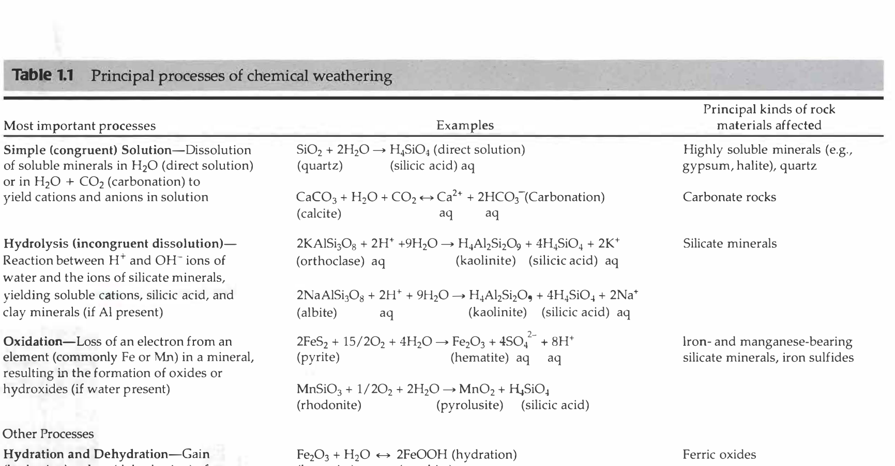

The correct option to choose is (b) Oxidation : Occurs when an atom or an ion gains an electron, because this statement provides an inverted, erroneous scientific definition.
In fundamental chemistry and geochemistry, the mnemonic OIL RIG governs redox reactions:
Oxidation is defined as the loss of electrons by an atom or ion, which causes an algebraic increase in its positive oxidation state (for example, ferrous iron oxidizing to ferric iron: $\text{Fe}^{2+} \rightarrow \text{Fe}^{3+} + e^{-}$). In contrast, gaining an electron is the universal definition of Reduction ($\text{Fe}^{3+} + e^{-} \rightarrow \text{Fe}^{2+}$). Hence, pair (b) erroneously defines oxidation as electron gain and is NOT correctly matched.

Oxidation occurs predominantly in subaerial environments exposed to atmospheric oxygen ($O_2$) and aerated groundwaters. The most abundant transition elements subject to weathering oxidation in common rock-forming minerals are iron ($\text{Fe}$) and manganese ($\text{Mn}$):
Hydration involves the direct incorporation of neutral water ($\text{H}_2\text{O}$) molecules into the crystal lattice of an existing mineral without causing comprehensive structural dissolution, thereby forming a hydrated mineral phase with increased molar volume:
Pair (a) ("Hydration : Occurs when minerals absorb water molecules") is scientifically accurate.
Carbonation refers to the reaction of minerals with carbonic acid ($\text{H}_2\text{CO}_3$), which forms naturally when atmospheric or soil-gas carbon dioxide dissolves in water:
During carbonation, bicarbonate ($\text{HCO}_3^{-}$) and carbonate salts or aqueous carbonate species are formed. In carbonate terrains:
When dissolved weathering solutions evaporate or lose $\text{CO}_2$, secondary carbonates (such as caliche, speleothems, or travertines) precipitate. Pair (c) is therefore correctly matched.
Chelation (from Greek chele, meaning claw) is a biochemical weathering process in which organic molecules with polydentate ring structures (secreted by lichens, mosses, soil fungi, and plant root systems, such as humic, fulvic, and citric acids) bind and "cage" polyvalent metallic cations (particularly $\text{Fe}^{3+}, \text{Al}^{3+}, \text{Mg}^{2+}$):
This mobilization dissolves otherwise highly insoluble minerals (such as feldspars, pyroxenes, and clays) and leaches metals downward through soil horizons. Pair (d) ("Chelation : Occurs when metal ion is removed by organic matter") is scientifically accurate.
| Weathering Process | Primary Chemical Agent | Atomic / Molecular Mechanism | Typical Mineral Transformation | Match Status in Question |
|---|---|---|---|---|
| Hydration | $\text{H}_2\text{O}$ molecules | Adsorption / inclusion of water into lattice | Anhydrite $\rightarrow$ Gypsum; Hematite $\rightarrow$ Goethite | Correctly matched |
| Oxidation | $\text{O}_2$, $\text{Fe}^{3+}$, oxidants | Loss of electrons (increase in positive valence) | $\text{Fe}^{2+}$ (silicates) $\rightarrow \text{Fe}^{3+}$ (oxides/hydroxides) | NOT correctly matched (Erroneously stated as electron gain) |
| Reduction | $\text{H}_2\text{S}$, organic carbon, anaerobic water | Gain of electrons (decrease in positive valence) | $\text{Fe}^{3+}$ oxides $\rightarrow \text{Fe}^{2+}$ soluble ions in bogs/swamps | N/A (True definition of electron gain) |
| Carbonation | $\text{CO}_2 + \text{H}_2\text{O} \rightarrow \text{H}_2\text{CO}_3$ | Proton exchange producing carbonates/bicarbonates | Calcite dissolution; feldspar weathering yielding $\text{HCO}_3^{-}$ | Correctly matched |
| Chelation | Organic acids / ligands (fulvic, humic) | Ring-bonding and extraction of metal cations | Extraction of $\text{Al}^{3+}, \text{Fe}^{3+}$ by lichen acids from basalt | Correctly matched |
Sam Boggs Jr., Principles of Sedimentology and Stratigraphy (Chapter 1, p. 23–25):
"Oxidation — Loss of an electron from an element (commonly Fe or Mn) in a mineral, resulting in the formation of oxides or hydroxides... An electron is lost from iron during oxidation processes."
William M. White, Geochemistry (Chapter 13: Weathering, Soils, and Stream Chemistry):
"Oxidation involves the loss of electrons, while reduction involves the gain of electrons. Because electron transfer must balance, oxidation of one species is always accompanied by reduction of another."